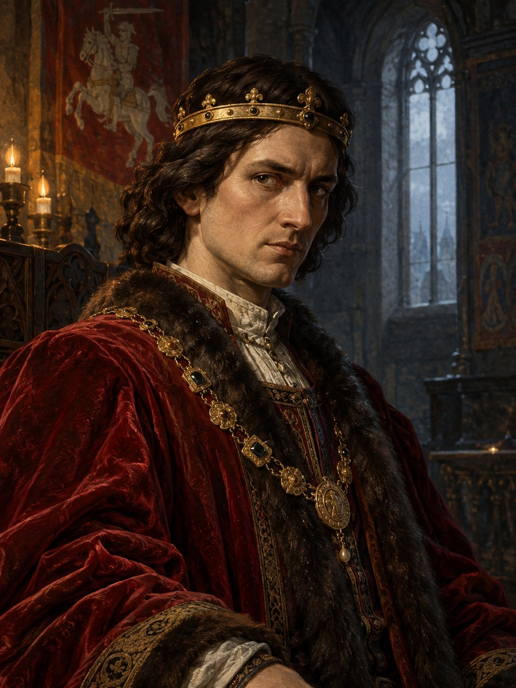

Jogaila¶
Summary¶
Jogaila (c. 1362 - 1 June 1434), baptised Władysław, is the nephew who kills Kęstutis, the cousin who spends fifty years half-fearing Vytautas, and the king who founds a dynasty. When the reader first meets him in Book I he is a young, anxious Grand Duke living in his father’s shadow, convinced that Lithuania must become Christian and Western to survive and that betrayal is a higher form of loyalty to the future. He is the Shadow-Seller’s first and longest-lasting customer. In the saga he is the mortal antagonist of Book I (with Skirgaila as his hands) and the man whose baptism ends the Silent Pact.
Jogaila

Jogaila · character¶
Type |
character |
Years |
c. 1362–1434 |
Status |
Historical record |
Note |
Grand Duke of Lithuania (1377–1434) and King of Poland (Władysław II Jagiełło from 1386); architect of the Kreva Union. |
Appearance & tells¶
Slender and frail-looking but restless, with dark intelligent eyes that never settle. He wears fine velvets and silks in the Western style against his cousins’ furs and leather, and is clean-shaven where the pagan dukes keep beards. Tells: he cannot look at Kęstutis’s silver wolf (Book I ch. 26; Book III ch. 20, where it costs him “everything he has” to hold Vytautas’s eyes); a crushing pressure on his chest in sacred groves; crows that follow him; a court burtininkas who has never cast him a bad lot. By the end, an old man with spectacles in his hand, looking at the floor in front of his feet at Vytautas’s funeral (Book V ch. 2).
Want · Need · Lie · Truth¶
Want (external) |
The Lithuanian throne and a Western dynasty: to unite Lithuania and Poland into a power rivalling the Holy Roman Empire, and to keep the Order from finishing Lithuania. |
Need (internal) |
To trust the one man he cannot buy: to stop seeing Krėva everywhere. |
Lie they believe |
That baptism and the Polish crown are a cheap price: that betrayal is only a higher loyalty to the future. |
Truth they learn (or refuse) |
What a bargain with the Shadow-Seller really buys: a line that inherits the crown and loses the land. He half-learns it in his old age, outliving Vytautas still guilty (Book IV; Book V ch. 12). |
Arc by book¶
Book I (1377-87), antagonist: inherits the throne (1377); signs the secret Treaty of Dovydiškės with the Order (31 May 1380); is caught and freed by Kęstutis in autumn 1381 (the “mercy” that will pay off at Krėva); retakes Vilnius on 12 June 1382; seizes Kęstutis and Vytautas at his camp near Trakai (early August 1382); is haunted by Krėva (ch. 26); signs the Union of Krėva (14 Aug 1385) and is baptised, married and crowned in Kraków (1386); puts out the Šventaragis flame (1387).
Book II: the distant king; makes Ostrów (4 Aug 1392) with Vytautas (ch. 10); Jadwiga dies (ch. 21).
Book III: the reconciliation: Vilnius-Radom (1401, ch. 3), the Brest council (ch. 13), and at Grunwald beside Vytautas (ch. 18-24).
Book IV: at Lutsk (1429) he is the one who offers and then withdraws the crown (ch. 18, 19, 24, 26); outlives Vytautas.
Book V: dies at Gródek, 1 June 1434, after hearing a nightingale (ch. 12).
Book VI: seen as a boy, taught by Uliana at six to hide what he wants (ch. 15), and as Algirdas’s chosen heir at fifteen (ch. 27, 28).
Power & magic¶
Tier 0 (Paprastas): no gift. His power is bought: the 1380 bargain with the Shadow-Seller is “the easy way” of the trap, and its price is that his line inherits the crown and loses the land (Sandėris). He holds the golden chain sent as a “gift” with the 1382 envoys. Henė’s stone for him is the last he holds in Book V. His ambition feeds the Gold-Glutton and draws the White Silence. Visible costs: four wives and sons only from the last; the grove pressure; the crows. The Root-Mother regards him as a tumour in her side.
Record vs saga¶
[Historical record]: Born c. 1362 (the saga’s selected reconstruction; the birth year remains disputed, with an older c.1352 view), Grand Duke of Lithuania from 1377 (co-ruling with Kęstutis), baptised Władysław in Kraków on 15 Feb 1386, married Jadwiga on 18 Feb and crowned King of Poland on 4 Mar 1386; ruler of Lithuania until 1392, then overlord of Vytautas. He signed the Treaty of Dovydiškės with the Order on 31 May 1380, regained Vilnius on 12 June 1382, when Hanul and the townspeople handed him the city while Kęstutis was away fighting Kaributas, and had Kęstutis and Vytautas seized on 3 Aug 1382 at his camp near Trakai; Kęstutis was found dead at Krėva on 15 Aug (the official story: suicide). Union of Krėva (14 Aug 1385); baptism of Lithuania (1387); Ostrów (1392); Grunwald (15 Jul 1410); Horodło (1413); Lutsk (1429). Wives: Jadwiga (d. 1399), Anna of Celje (d. 1416), Elżbieta Granowska (d. 1420), Sophia of Halshany (m. 1422), mother of Władysław III and Casimir IV. Died 1 Jun 1434 at Gródek (Horodok) near Lviv. See Wikipedia.
[The saga’s invention]: The Shadow-Seller’s bargain and the golden chain used on Kęstutis; the strangulation (the record gives murder by strangulation as one side of a disagreement, suicide as the official story); the crows and the grove pressure; his inability to look at the silver wolf; the court burtininkas. The nightingale at Gródek is a historical anecdote (Długosz). The saga selects c.1362 for his birth, including four in 1366 in Book I ch. 5; these narrative ages follow that reconstruction and do not settle the historical dispute.
Pronunciation¶
jo-GAI-la (/joˈɡɐɪɫɐ/), English respelling yo-GUY-lah; stress on the second syllable. The dynasty Jogailaičiai: jo-gai-LAI-čiai, yo-guy-LYE-chay. Polish Jagiełło, baptismal Władysław.
Appearances¶
Book I: ch. 1-7, 9-13, 17, 26 (the silver wolf), 28, 28b (Union of Krėva), 29, 30 and the prologue. Book II: ch. 1, 2, 4, 10 (Ostrów), 21, 22, 29 and the afterword. Book III: ch. 3 (Vilnius and Radom), 6, 8, 13, 18, 20, 24 (a long chapter from his side), 25, 27, 30 and the afterword. Book IV: ch. 3, 13, 14, 18, 19 (Lutsk), 24, 26 (Last Meeting). Book V: ch. 2, 3, 6, 12 (the nightingale), 18, 24 and the afterword. Book VI: ch. 15, 25-30 (as a boy and Algirdas’s heir).
Relations
Ally: Teutonic Order (1380–1382) — Dovydiškės. · Vytautas (1384–1389) — Cold truce. · Vytautas (1392–1430)
Antagonist of: I · The Wolf’s Exile — mortal, truce
Bargained with: Šešėlių Pardavėjas / Henė (1380–1434)
Child of: Algirdas · Uliana of Tver (Julijona Tverietė), Algirdas’s second wife
Enemy: Kęstutis (1380–1382) · Vytautas (1382–1384) · Vytautas (1389–1392)
Holds: Auksinė grandinė (the strangling chain) (1382–1382) — Sent as a ‘gift’ with the envoys (plant in ch.1).
Member of: Algirdaičiai (Algirdas’s line)
Practises: Sandėris (bargain) (1380–…) — tier 0
Rules: Grand Duchy of Lithuania (1377–1392) · Kingdom of Poland (Lesser Poland lords) (1386–1434)
Sibling: Karigaila (Jogaila’s brother) · Skirgaila · Švitrigaila
Spouse: Jadvyga (Jadwiga) (1386–1399)
Took part in: Agreement of Ostrów · Baptism of Lithuania; Šventaragis flame put out · Battle of Grunwald / Žalgiris · Congress of Lutsk: the crown offered · Hanulas and the townsfolk take Vilnius for Jogaila · Jogaila baptised, married, crowned in Kraków · Jogaila catches his chill at Medyka (nightingales) · Jogaila dies at Gródek · Pontoon bridge over the Vistula at Czerwińsk · Trakai granted to Skirgaila (1382-92) · Treaty of Dovydiškės · Truce in the ashes with Jogaila · Union of Krėva
Timeline¶
Year |
Event |
Book |
|---|---|---|
1380-05-31 |
I · The Wolf’s Exile |
|
1382-06-12 |
I · The Wolf’s Exile |
|
1382-07 |
I · The Wolf’s Exile |
|
1384 |
I · The Wolf’s Exile |
|
1385-08-14 |
I · The Wolf’s Exile |
|
1386-02-15 |
I · The Wolf’s Exile |
|
1387 |
I · The Wolf’s Exile |
|
1392-08-04 |
II · The Golden Shadow |
|
1410-06-30 |
III · The Green Wood |
|
1410-07-15 |
III · The Green Wood |
|
1429 |
IV · The Invisible Crown |
|
1434-04 |
V · The Wolf’s Legacy |
|
1434-06-01 |
V · The Wolf’s Legacy |
Connections¶
graph LR
algirdaiciai["Algirdaičiai (Algirdas's line)"]
algirdas["Algirdas"]
bargain["Sandėris (bargain)"]
ev_dovydiskes["Treaty of Dovydiškės"]
ev_grunwald["Battle of Grunwald / Žalgiris"]
ev_jogaila_dies["Jogaila dies at Gródek"]
ev_krakow_1386["Jogaila baptised, married, crowned in Kraków"]
ev_kreva_union["Union of Krėva"]
ev_lithuania_baptism["Baptism of Lithuania; Šventaragis flame put out"]
ev_lutsk["Congress of Lutsk: the crown offered"]
ev_ostrow["Agreement of Ostrów"]
ev_truce_ashes["Truce in the ashes with Jogaila"]
ev_vilnius_retaken["Hanulas and the townsfolk take Vilnius for Jogaila"]
gdl["Grand Duchy of Lithuania"]
golden_chain["Auksinė grandinė (the strangling chain)"]
jadvyga["Jadvyga (Jadwiga)"]
jogaila["Jogaila"]
kestutis["Kęstutis"]
poland["Kingdom of Poland (Lesser Poland lords)"]
shadow_seller["Šešėlių Pardavėjas / Henė"]
skirgaila["Skirgaila"]
svitrigaila["Švitrigaila"]
teutonic_order["Teutonic Order"]
uliana_tver["Uliana of Tver (Julijona Tverietė), Algirdas's second wife"]
vytautas["Vytautas"]
jogaila -->|Spouse| jadvyga
jogaila -->|Sibling| skirgaila
jogaila -->|Sibling| svitrigaila
jogaila -->|Member of| algirdaiciai
jogaila -->|Rules| gdl
jogaila -->|Rules| poland
jogaila -->|Ally| teutonic_order
jogaila -->|Enemy| kestutis
jogaila -->|Practises| bargain
jogaila -->|Holds| golden_chain
jogaila -->|Took part in| ev_dovydiskes
jogaila -->|Took part in| ev_vilnius_retaken
jogaila -->|Took part in| ev_truce_ashes
jogaila -->|Took part in| ev_kreva_union
jogaila -->|Took part in| ev_krakow_1386
jogaila -->|Took part in| ev_lithuania_baptism
jogaila -->|Took part in| ev_ostrow
jogaila -->|Took part in| ev_grunwald
jogaila -->|Took part in| ev_lutsk
jogaila -->|Took part in| ev_jogaila_dies
algirdas -->|Parent of| jogaila
vytautas -->|Enemy| jogaila
vytautas -->|Ally| jogaila
vytautas -->|Enemy| jogaila
vytautas -->|Ally| jogaila
shadow_seller -->|Bargained with| jogaila
uliana_tver -->|Parent of| jogaila
style jogaila stroke-width:3px